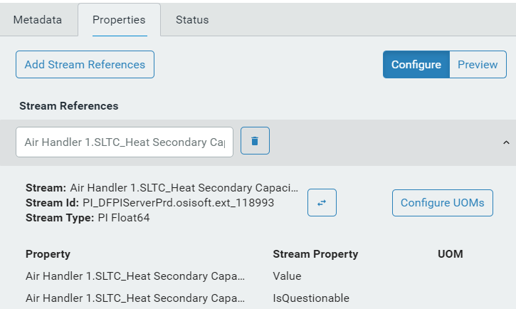

Create and configure an asset
Follow the procedures to create an asset, add and configure its metadata and measurements, and select and configure a measurement whose status will be visible in the card or table view.
Create the asset
Click the menu icon
 and click Asset Explorer.
and click Asset Explorer.To change the namespace, click on the namespace to open the Select a Namespace window.

Select the namespace and click Continue.
Verify that the Asset/Asset Type selector is set to Assets.
Click the plus symbol (+) in the toolbar to create a new asset.
The Select Type for New Asset window opens. By default, the type selected is <None>.
Accept the default and click Continue.
The details blade opens on the right side.
Enter a name and description for the asset.
Add metadata to the asset
Click Add Metadata on the Metadata tab.
Note: Metadata is static attributes about assets, for example, model or region.
The fields for entering the metadata details appear.
Enter a name for the metadata.
(Optional) Enter a value for the metadata and select a type.
Note: The value must match the selected type. The following date/time format is supported: MM/DD/(YY)YY hh:mm(:ss).(Optional) Select a UOM.
Continue adding metadata for the asset.
Add measurements to the asset
Click the Measurements tab.
Click Add Stream References to add a measurement.
In the Select Streams window, select the stream you want.
Note: Use the search box to find the stream. You can search on the stream name, description, or the type. Use the asterisk (*) as a wildcard character.Click Add.
The stream reference appears in the right pane. This is the automatically generated user-friendly stream name. You can edit this name. Click the caret symbol to display the measurements for the stream reference.
The measurements associated with the stream are displayed.

Edit the names of the measurements.
Tip: By default, the stream reference is appended as a prefix for all measurement names. You can change this prefix and it will automatically get appended to all measurement names. This is useful if you have multiple streams with the same properties. The prefix is an easy way to distinguish between the different streams.
Clear the Include checkbox to remove any measurements you don't want to include.
Click Configure UOMs.
On the Configure UOMs page, make any changes to the property UOMs.
Note: UOMs can be set only on numeric types.
When you are done, click Save.
Note: Once you click Save, any changes are immediately made to the UOMs on the stream, regardless of any other actions you take on this asset. For example, the UOM changes to the stream are not reversed if you click Cancel on the Measurements tab or if you delete the asset.
Click Preview to see a simple list of all measurements from all streams associated with this asset.
Add status tracking to the asset
Click the Status tab.
Click Add Status Configuration.
In the Select Measurement window, click the measurement that you want to display status for. Click Continue.
Note: Only measurements with enumerated states or string values can be selected for the asset status; therefore, only these measurements are displayed.
You can only specify one measurement as the asset's status.
Click the status icons to map the icon for each value.

All the values have been mapped in the following screen capture.

Tip: You can switch to a different measurement by clicking the
 icon.
icon.
Save the asset
- Click Save.